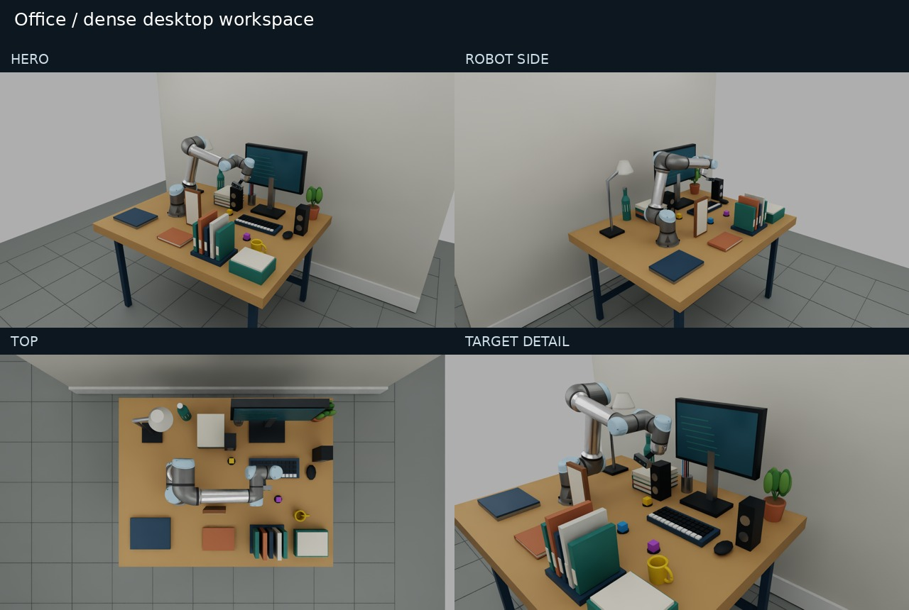
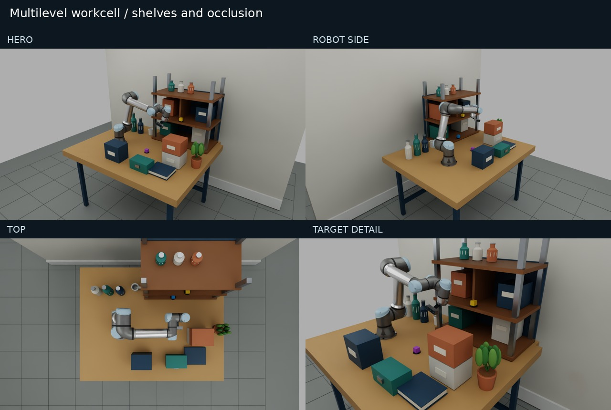
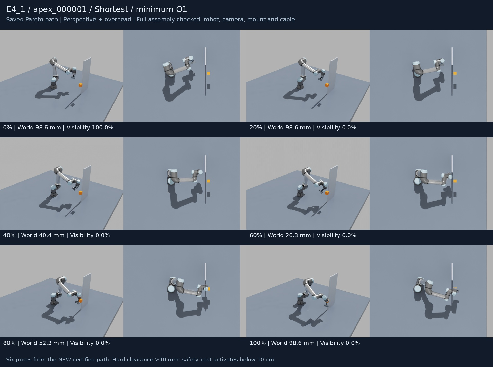
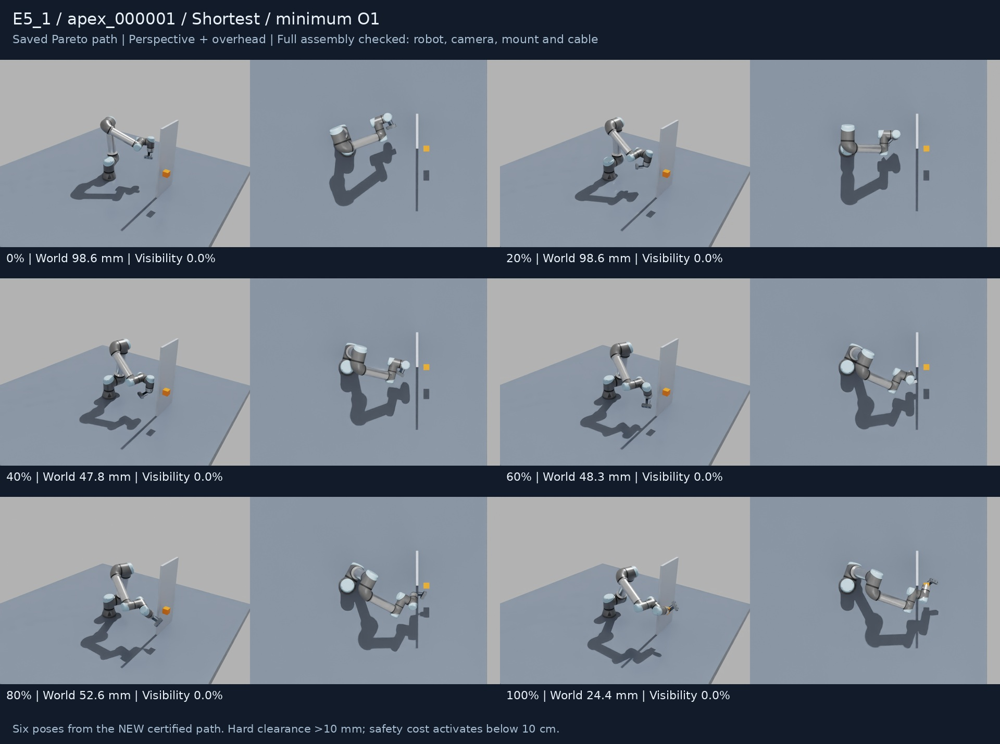
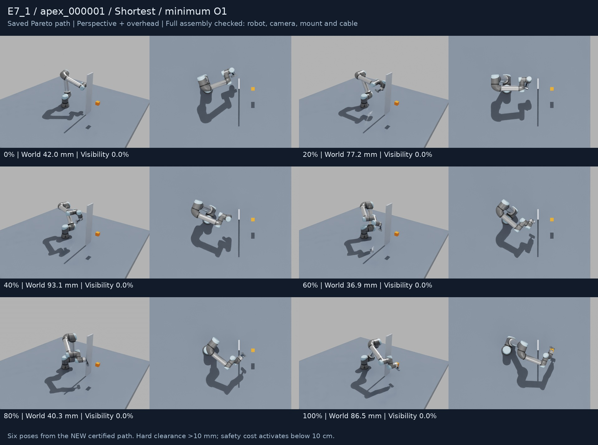
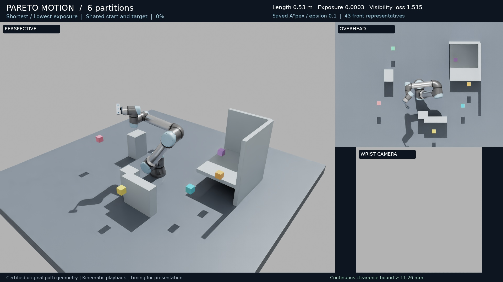
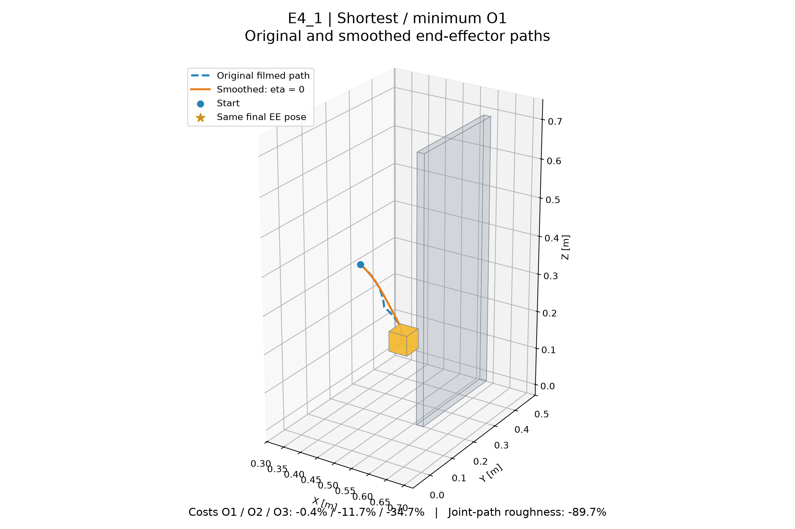
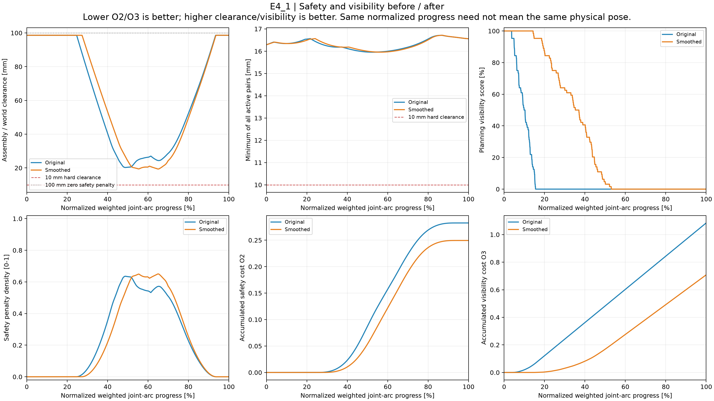

RESEARCH EXAMPLES · PORTABLE LAB HANDOFF
מטבח, עמדת עבודה ומדפים — לצד E4/E5/E7 ושישה קירות. קובצי סביבה, קוד יצירה, מסלולים שמורים וסרטונים מהעבודה הקודמת.
Seven editable environments · 21 saved preference videos · one before/after smoothing example.
Instructions and commands · All route costs (CSV) · Core toolkit: one-page Hebrew PDF
No installation is needed to view this gallery. Keep its folder together. The USD scenes use the original hardware; the later preference videos use the updated assembly. These are historical kinematic demonstrations, with each experiment's scope stated below.
Open original USD in Isaac Sim · Animated USD (original rig)
Editable geometry JSON · Planning geometry
Original scene: 2026-11-11, UR5e with earlier camera/bracket, bare tool flange.
The three videos below: 21 November 2026, updated gripper + PickNik + D435 assembly.
Three objective extrema among collision-certified C2 curves from a 500K lazy PRM; not a complete Pareto frontier
Recorded results · Start / goal · Archived audit
Length: 0.329 m · Exposure: 0.253 · Visibility loss: 0.315
Length: 0.421 m · Exposure: 0.017 · Visibility loss: 0.217
Length: 0.351 m · Exposure: 0.054 · Visibility loss: 0.127

Length: 0.277 m · Exposure: 0.012 · Visibility loss: 0.135
Length: 0.304 m · Exposure: 0.009 · Visibility loss: 0.114
Length: 0.282 m · Exposure: 0.011 · Visibility loss: 0.091

Length: 0.307 m · Exposure: 0.118 · Visibility loss: 0.248
Length: 0.341 m · Exposure: 0.020 · Visibility loss: 0.415
Length: 0.343 m · Exposure: 0.026 · Visibility loss: 0.224

Open original USD in Isaac Sim
Original scene: 2026-09-22, UR5e with earlier camera/bracket, bare tool flange.
Objective extremes among certified C2 cubic curves obtained by old-path reuse and lazy corridor repair; not an exact Pareto frontier
Length: 0.519 m · Exposure: 0.462 · Visibility loss: 0.693
Length: 0.973 m · Exposure: 0.020 · Visibility loss: 1.867
Length: 0.839 m · Exposure: 0.070 · Visibility loss: 0.288

Length: 0.545 m · Exposure: 0.560 · Visibility loss: 1.067
Length: 1.275 m · Exposure: 0.037 · Visibility loss: 2.409
Length: 0.633 m · Exposure: 0.593 · Visibility loss: 0.717

Length: 0.766 m · Exposure: 2.090 · Visibility loss: 3.139
Length: 1.954 m · Exposure: 0.142 · Visibility loss: 3.835
Length: 1.624 m · Exposure: 0.877 · Visibility loss: 2.293

Length: 0.405 m · Exposure: 0.162 · Visibility loss: 0.328
Length: 0.533 m · Exposure: 0.017 · Visibility loss: 0.826
Length: 0.445 m · Exposure: 0.339 · Visibility loss: 0.231
18 October 2026 · earlier hardware. A selected saved graph path and its smoothed alternative, with fixed endpoints. Presentation timing is not execution speed.


Original replay · Smoothed replay · Selection metadata